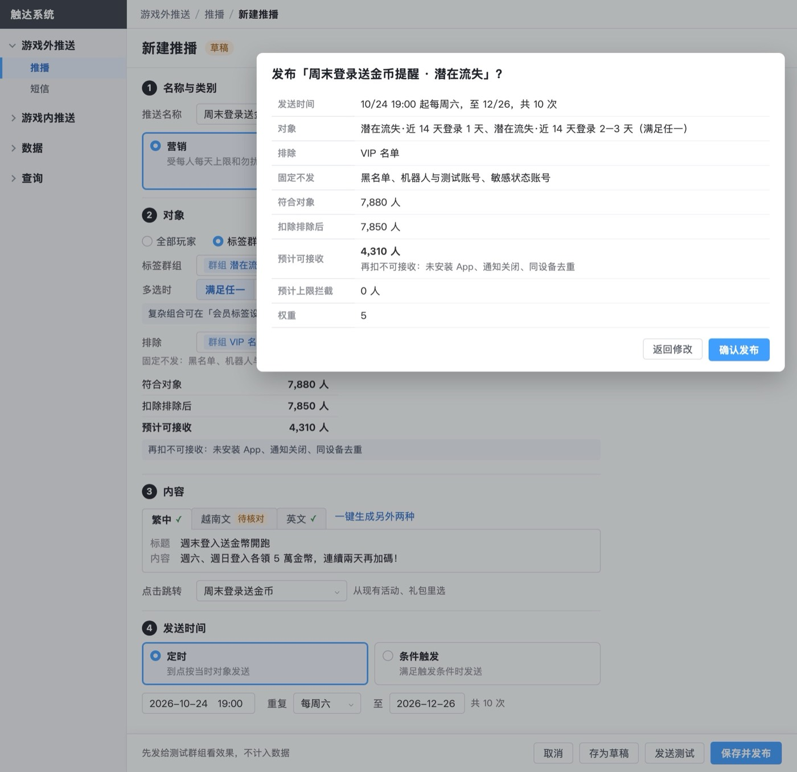
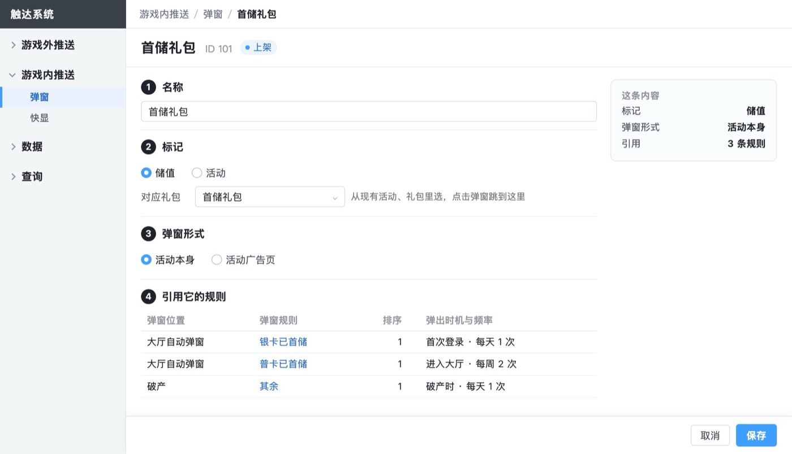
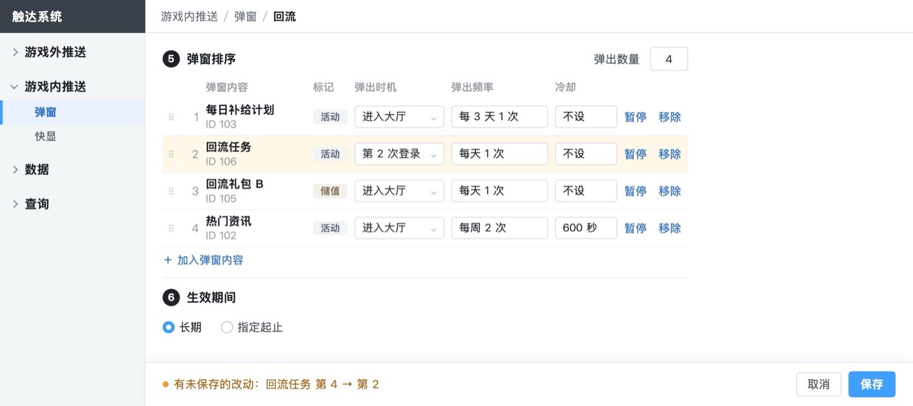
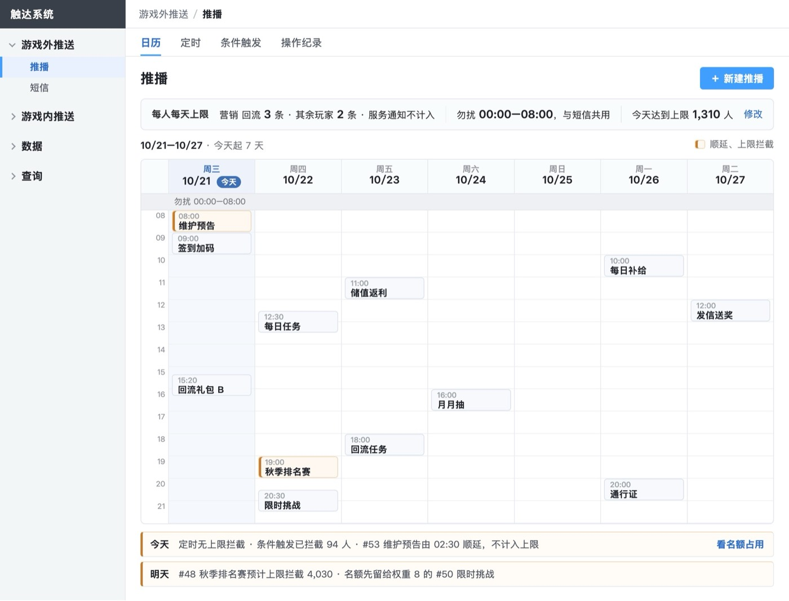

推送系统后台 · 需求评审版 · 从第一性原理看界面 · 2026-10-28
后台主体不用大改；按「做决定的那一刻要看到后果」来推，有 2 处必须改、3 处值得改
必须改的两处都是同一个缺口：运营做完决定，看不到这个决定的后果。推播发布前，看不到会挤掉别人多少；弹窗配完，看不到某个玩家进大厅会弹什么。你 10/28 定了先改 1、2、4、5；对标顶尖产品后第 3 处也定了改，五处都已改进评审版。
2处必须
发布确认里写出会多拦下哪几条；弹窗列表可按玩家预览，保存时提示首次登录内容会漏弹
3处值得
弹窗的时机、频率改为设在内容上；日历补上条件触发；拦截数都能点开看明细
2处可选
权重 10 档改 3 档；短信、快显列表排法与推播一致
01出发点：后台是让运营在做决定的那一刻看清后果
| 谁 | 在后台做什么决定 | 那一刻要看到什么 |
|---|
| 运营 | 发不发、发给谁、什么时候发；弹窗放进哪条规则、排第几 | 发出去会到多少人、会不会挤掉别的；某个玩家进大厅会看到什么 |
| 运营负责人 | 每人每天上限设多少；谁先谁后 | 改了以后谁多收、谁少收 |
| 客服 | 玩家为什么没收到 | 这位玩家当时在不在对象里、被什么拦了 |
| 业绩 | 储值、活动消息要在对的时刻到达，又不把玩家打扰走 | 重要的消息不被普通消息挤掉；弹窗不重复、不漏弹 |
推出三条原则：① 做决定的那一刻，就看到这个决定的后果；② 一件事只设一次，同一个意思只用一个叫法；③ 看到一个数，就能点进去看它怎么来的。
02必须改：两处做完决定看不到后果
1 推播发布确认：写出这条会让哪几条多被拦下
- 现在：确认框只写本条的预计上限拦截。比如新加一条权重 10 的推播，明天 #48、#49 会多拦多少人，要发布后去日历和名额占用里自己找。
- 改成：确认框里，在「预计上限拦截」下面加一行「因此多拦下：#48 秋季排名赛 +1,200 人」；没有影响的写「不影响其他推送」。
- 依据：权重就是为了让重要的先发，挤掉谁正是运营在这一刻要判断的。运营走查「明天必发的推播」这个场景时，就卡在这里。业界官方文档里没见到发布前估算拦截，这一步是我们多做的。
- 代价（推断）：用的是名额占用已有的计算，在发布前按新的一条先算一遍。

第 1 页 · 发布确认：「预计上限拦截」下面加一行
2 弹窗：配完能按玩家预览；保存时提示首次登录的内容会漏弹
- 现在：有五样东西一起决定玩家进大厅弹什么：规则、优先级、命中方式、时机与频率、跨规则合计。只有客服用的玩家查询能看到结果，配置的页面上看不到。轮流的位置上，首次登录的内容只放进一部分规则时，多数玩家当天会轮不到它，保存时没有任何提示。
- 改成：
- 弹窗规则列表加「按玩家预览」：输入会员编号，显示这位玩家下一次进入各位置会弹什么、为什么。直接用玩家查询的弹窗那一段。
- 保存时，如果首次登录、第 N 次登录或活动开启的内容在轮流位置上没放进全部规则，提示「只在 2/6 条规则里，玩家首次登录时可能轮不到」。
- 依据：运营 10/26 有两条反馈都和看不清结果有关：「频率每周和每天同时存在时怎么触发」「感觉没按之前优化做」。业界做法是用测试设备预览，事后靠日志解释；我们已经有玩家查询，复用成本最低。
- 代价（推断）：预览只是加一个入口，复用已有页面；提示是保存时数一下该内容在几条规则里。
03值得改：一件事设一次，一个数能点开
3 弹窗的时机、频率、冷却设在弹窗内容上，规则里只选内容和排序
- 现在：同一个内容在每条规则里各设一次。首储礼包在三条规则里是三种：首次登录 · 每天 1 次、进入大厅 · 每周 2 次、破产时 · 每天 1 次。次数还要跨规则合计，每条规则又按自己的周期判断。
- 改成：时机、频率、冷却在弹窗内容上设一次，所有规则共用。某个人群确实要不同的，再在那条规则里单独改。
- 依据：频率说的是「这位玩家多久能再看到这个弹窗」，属于内容本身。运营 10/26 原话「频率应统一成一种」。业界做法也是把次数和周期设在单条消息上（Firebase、OneSignal、Airship、MoEngage 等）。
- 代价：第 4 页的编辑规则、弹窗内容编辑、命中方式对比、玩家查询要改图，规则里的频率、合计两节要重写。跨规则合计的算法变简单。

第 4 页 · 首储礼包在三条规则里各设一种时机和频率

第 4 页 · 规则里每个内容各填时机、频率、冷却
4 推播日历补上条件触发：名额是共用的，日历只排了定时
- 现在：条件触发和定时抢同一份每天名额，日历上却只有定时。今天条件触发已经拦下 94 人，只能在日历下方的今天一行看到合计。
- 改成：日历每天的格子顶部加一行「条件触发 4 条 · 预计 1,400 人」，点开就是当天的名额占用。
- 依据：运营 10/26 原话「怎么把所有类型推播放一起管」。
- 代价：改日历两张图，规则「日历」一节加一句。

第 1 页 · 推播日历：只有定时，条件触发要去隔壁页签看
5 拦截数都能点开：现在只有日历今天一行能进名额占用
- 现在：明天一行的「#48 预计上限拦截 4,030」、定时列表状态下的拦截数、条件触发列表的拦截数，都点不开，要回到今天一行再改查看日。
- 改成：这些数都能点，直接打开名额占用，查看日和这条推送都带好。
- 依据：看到拦截数，下一个问题一定是「为什么、拦了谁」。
- 代价：只改交互，图上把这些数画成可点的样式，规则「名额占用」加一句入口。
04可选：少一点选择，同一件事同一个排法
| 改什么 | 为什么 | 代价 |
|---|
| 推播权重 1–10 改为三档：普通、优先、最优先 | 每人每天只有 2–3 条名额，运营要表达的只是「这条要先发」；10 档分不出差别。业界弹窗优先级常用档位，如 Braze 用高、中、低三档 | 新建页、列表、名额占用的图，以及权重相关规则的写法 |
| 短信、快显列表改成和推播一样的排法：页签分定时、条件触发 | 管的都是定时加条件触发，现在推播用页签，短信、快显用分段加分组，运营要学两种 | 短信、快显列表两张图 |
05按原则看过、不用改的
- 上限在各自列表顶部设、名额占用按「查看日 + 人群」看、开屏是推播日历、命中方式按位置设：这些都是你定的，按原则看也成立，因为上限和排期在同一处就能决定。
- 玩家查询：客服在一页里看到四种推送的状态、原因和记录，已经满足「看到一个数能查怎么来的」。
- 数据页：从各列表行上的「数据」直达单条数据，路径已经最短。
06照这样改要动的地方
| 改动 | 要改的图 | 要改的规则 |
|---|
| 1 发布确认写出多拦下谁 | 02b | 第 1 页「保存与发布」一句 |
| 2 按玩家预览、首次登录提示 | 10a 加入口；新画一张预览弹层；10 编辑页加提示 | 第 4 页「列表」「保存」各一句 |
| 3 时机、频率设在内容上 | 10、10d、11、10e、10c2、10k、19 | 第 4 页「规则内容」「命中方式」重写两节；研发改动、数据迁移各改一句 |
| 4 日历补条件触发 | 00、02a | 第 1 页「日历」一句 |
| 5 拦截数可点开 | 02a、02e、02f 的拦截数改为可点样式 | 第 1 页「名额占用」一句 |
建议先做 1、2、4、5：只加东西，不动现有结构，改完评审版主体不变。3 改的是弹窗的配置方式，影响面最大，但最能减少运营的困惑；要不要做，请你定。